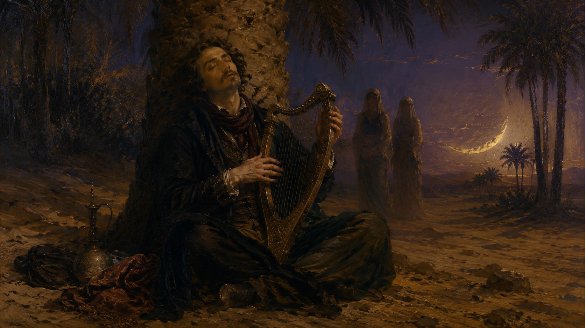
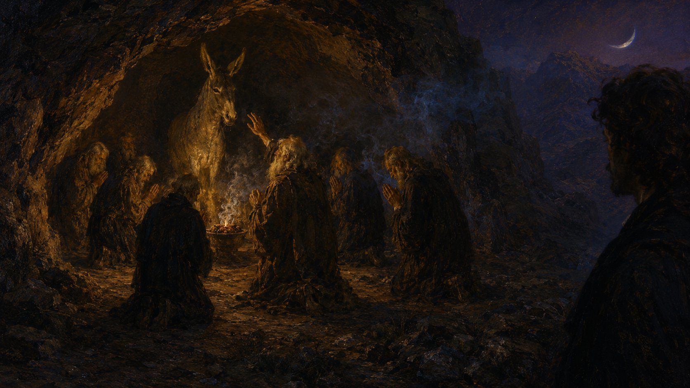
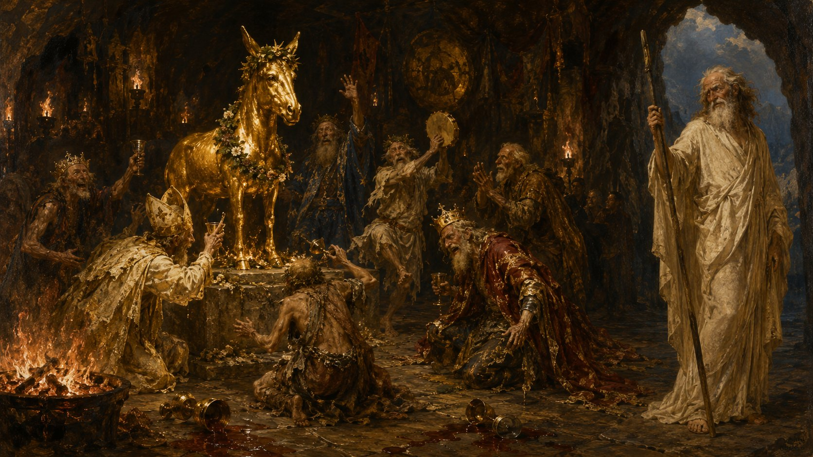
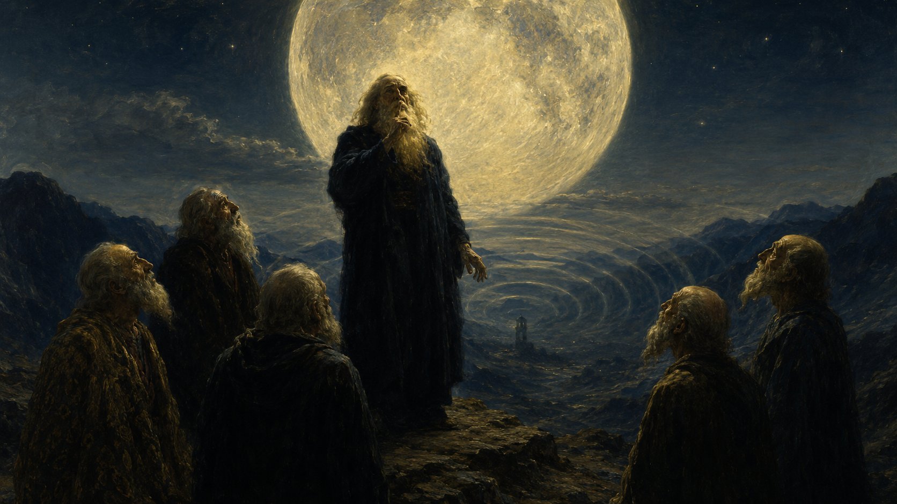
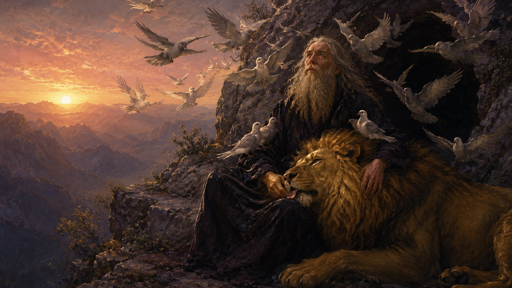

尼采《查拉圖斯特拉》卷四是整本書最被忽略、最被誤讀、也最有當代意義的一卷。它不是教義——它是一場戲劇、一連串戲仿、一個關於「教學會失敗」的長篇實驗。卷四的最後五章——〈沙漠女兒〉、〈喚醒〉、〈驢子節〉、〈夢遊者之歌〉、〈徵兆〉——是這個實驗的高潮。
要把這五章教給2026 年的陽明交大大學生，傳統的學術註釋（即使有 Grätz NK 4/2 這樣的傑作）不夠用。學生需要看見論證的結構、聽見原文的回響、感覺到尼采為什麼還沒過時。
這套教材的設計目標：用視覺化裝置讓尼采的論證結構自己顯露。每章一個核心視覺裝置（環形劇場、八段應答禮拜、十二鐘聲、笑獅的徵兆位置），每章配一張 19 世紀末德奧象徵主義風格的 hero 圖（ChatGPT 生成），每章末尾有「對台灣」一節。
然後，事件之上還有共振，共振之上還有細節鑽探——這就是三層構造。
八個教材檔案分成三層使用——讀第一遍、第二遍、第三遍各有不同的入口：
五份視覺化教材，每章一個獨立故事。學生第一次接觸尼采的入口。
隱藏結構，五條暗線橫貫五章。讀第二遍時，五個故事變回一首詩。
四個附錄，每個是一個細節的爆炸點。給好學生、給備課老師的進階鑰匙。
每章可以獨立使用——拖進 Google Meet 直接投影。每份檔案約 330–500 KB，含 hero 圖、原文德中對照、核心視覺裝置（SVG）、五個關鍵語句解讀、對台灣學生的提問。





五章讀完，事情還沒結束。原文裡有五條詞語暗線——食物、獅子、笑、康復者、徵兆——它們橫貫五章，每次出現意義都微調一點。讀懂了這些暗線，五章從五個故事變成一首詩。
每條暗線都有 4–5 個原文錨點，每條都有對台灣的應用。最讓我意外的發現：影子在 IV-16 的詩裡，已經預演了 IV-20 的笑獅，但他不知道。五條暗線在 IV-20 的早晨同時收束。
四個獨立的鑽探點，每個針對原文裡一個學生第一次讀不會注意、但對整套論證有決定性貢獻的細節。
A · 四種數列裝置（Sela 7 · I-A 8 · Bells 12 · Ringschliessung 5）——四種「讓秩序自己顯露」的方法。
B · Manns-Kost 與女性精神——整套教材入口處的隱藏性別焦慮。
C · 笑作為武器——五個位置的笑，對位你《鏡像的惡魔》第六章。
D · 老鷹的呼喚——徵兆不是被收到的，是被呼喚的。
不用一次讀完。建議路徑：
整套是 CC BY-SA，拿去改不用問——但有兩個建議：
你可以拿這套方法做別的事：
承接串燒基地的「標註透明原則」——這套教材所有 AI 工具與資料來源全部公開：
機器做的：HTML/CSS 撰寫、原文整理、互動腳本、圖像生成、版面設計、文獻檢索。
人做的：選什麼來教、為臺灣讀者怎麼框定脈絡、判斷哪些論點站得住、決定要怎麼給學生（給多少、給的順序、給的方式）。
對應我一直主張的：「人類有限，讓機器提供選擇，我們再來做出選擇，我們再修正，然後機器來評價我們的選擇，然後再建議我們選擇，然後我們再重新選擇。」這套教材就是這個方法的展示。